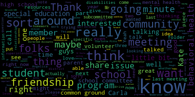
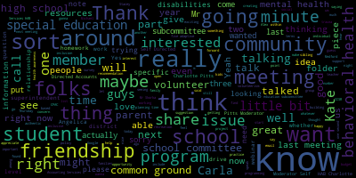

total time: 35.5 minutes
total words: 6612

{kind=link}
total time: 3.58 minutes
total words: 599
{kind=link}
total time: 1.85 minutes
total words: 221

total time: 0.07 minutes
total words: 15

[SPEAKER_13]: All right, I apologize for the delay, but we're recording and good to go wherever. We also have live transcription going for closed captioning as well.
[McLaughlin]: It's great. Thank you very much. That's exciting. The transcription. So thank you guys for doing that. And it's 503 and we're going to start the behavioral health special education subcommittee meeting. We'll go from, we're scheduled to go from five to 630 for the first portion of the meeting. We'll have a behavioral health five to 545. And for 545 to 630, we'll have our special education topic. I'd like to call the roll, please. Melania McLaughlin present, Mia Mustone? I don't see Mia yet.
[SPEAKER_16]: Paul Rousseau? Present, and I believe Mia is not available this evening. She's driving all over Kingdom Come. This happens often for her.
[McLaughlin]: So two present, one absent. I actually, I'm sorry, I'm trying, I was just looking through, of course, right before we started, I clicked on my email and I lost our introduction for our, that I need to read to the community. So if you guys could just bear with me one second, it is in the, It's in the email that I sent out to the group with the link, so I'm sorry. I found it, thank you. I had it open a few minutes ago and then I accidentally closed it. So please be advised that on Thursday, January 21st, 2021, from 5 to 6 p.m., 630 p.m., there'll be a behavioral health and special education subcommittee meeting held through remote participation via Zoom. The purpose of the Thursday, January 21, 21 behavioral health and special education subcommittee is to address best practices and policies for creating trauma-informed schools. It's behavioral health category. and building community and school-based friendships for students with disabilities. That's under our special education category. And pursuant to Governor Baker's March, 2020 order, suspending certain provisions of the open meeting law and the governor's order imposing strict limitations on the number of people that may gather in one place, this meeting of the Medford school committee subcommittee will be conducted via remote participation to the greatest extent possible. Specific information, the general guidelines for remote participation by members of the public and our parties or the right or requirement to attend this meeting can be found on the city of Medford website at medfordmass.org. This meeting can also be viewed through Medford Community Media and on Comcast Channel 22 and Verizon. And as Dr. Cushion just noted, we are also offering closed captioning now for accessibility. So that's really good news. Glad to hear it. So we are gonna start, as I said, with the behavioral health. And I think that's a really important. Aspect of the subcommittee meeting. We had one scheduled for December and it happened to be on that day that we got that foot of snow. And so we ended up not having it and we are rescheduling today. So at the last meeting minutes, I sort of took a little bit of note to some of the things that we talked about at the last meeting. So on the call, we have Stacey Shulman, who is the director of guidance and who leads the charge in the helping us create trauma-informed schools. And Stacey, if you wanna just speak for a moment and then I'm gonna pull up our meetings from our minutes from the last meeting to talk about some of the outstanding items we had discussed. Would you like to just do a little intro?
[Schulman]: Good evening, I'm Stacey Schulman. I'm the Director of School Counseling and Behavioral Health for Medford Public Schools and a licensed mental health Councilor. We've been talking in our meetings this year a lot about trauma, especially related to the COVID pandemic. and what our students are facing, but also just creating trauma sensitive schools. One of the other topics that we've delved into a lot is speaking about stress and what a lot of our specifically secondary students have mentioned is stress related to homework. So we'll talk a little bit about that later on today, but Medford has sent out surveys to high school faculty, high school students, and Mr. DeLeva, the high school principal is on with us and we'll talk a little bit about those survey results as well as what the steps we're going to take based on that data will be. Thank you.
[McLaughlin]: Thank you, that's great. That was one of the follow-up items that we wanted to have. I noticed that we also have school committee member, Paulette van de Kloot here. Thanks Paulette for joining us. We have several faculty members as well and superintendent intern, Superintendent, intern, Tom Miliszewski. Tom, thanks for joining us. Dr. Cushing, everyone that's here, we appreciate you being here. So that was actually also in the minutes for the last meeting that we were talking about the high school survey, the homework stress, which we're definitely seeing a lot of right now. So I'm eager to hear more about that. And I know that you said that we were gonna share the results of the high school survey. So like to be able to do that. And then some other notes that I had from our last meeting that I wanted to follow up on was that were suggestions, you know, from our minutes where you had talked about a little bit about the NAN project. I wanted to know how that was going and whether that happened and or how families can participate if possible or, you know, are there any projects with Elliot that we can share that we might know about? And then also there was a suggestion about a webinar around some of these issues. So I just wanted to follow up on those two items, but maybe we can start with the, well, why don't you decide where you want to start, Stacey?
[Schulman]: So I'll talk a little bit about the Dan project first. Cause that's, that's sort of the smaller, um, item or less involved. The NAN project is a partnership that we have through Elliott Health and Human Services, which is a large community agency that focuses on behavioral health in our in our area. And the NAN project was created as a way to talk to students about mental health, but more specifically, they bring in what they call peer mentors. And they're young adults in their early 20s who have experienced moderate to severe mental illness and have come through it. And so they come and they speak to students in terms of an education portion of it, but as well to relay their experience. And the purpose is to not only educate students around mental health, but also to enlighten them in terms of that 95% of people who develop a mental health disorder recover with supports. And so the message is hopeful. and the messages with somebody who is very similar in age. So we had them come in and speak to our seniors, and then we're working on a calendar with them to speak to the other grades as well. They break out into smaller groups in order to have like a closer, closer knit conversation around it, and we received a lot of positive feedback. We've had Nan come in person in previous years, but this was done on Zoom during advisory. They have in the past provided parent nights or informations related to mental health awareness. They've also relayed a lot of information to staff in the past for like a faculty one-on-one mental health one-on-one session. They're a great resource and I'm grateful to them for always being willing to support Medford.
[McLaughlin]: Is there a contact there that you can share Stacey with us that For example, if we thought about, or if there are folks on the call that thought about wanting to do some sort of a parent night for mental health awareness, or if that's potentially an objective that somebody wants to walk away from within this particular meeting. Certainly, I know that you talked about also professional development specific to the DESI mandate and around suicide prevention. And again, you oriented a little bit last time that the NAN project was created as a suicide awareness program initially, is that right?
[Schulman]: Yeah, so the director of the NAN project is Jay Kavanaugh and his sister Nancy, who they called NAN, died by suicide. And so they developed this project in her honor to serve as a community support.
[McLaughlin]: And if we want to find out about any community classes for mental health awareness, we could reach out to Elliot and then share that with the community.
[Schulman]: I'm not sure if the NAN projects provides specific community based. education, their focus a lot is pushing into school systems.
[McLaughlin]: But didn't you just mention a moment ago that Elliot does have family-based mental health awareness?
[Schulman]: Elliot has family-based care, and the NAN project has come to schools to do a parent night. So we could certainly talk to them about doing that. It would, of course, be on Zoom.
[McLaughlin]: Yes, of course. But I think that would be a really good idea, especially as we were talking about, you know, whether there was a webinar or something, but something around sort of community education, it sounds like a great program. And the students are really, you know, being served and learning from it, which I think is great within our schools, but it would be great if we could have something that was community based. Do you have any questions or comments on this? Does anybody feel free if you have questions or want to speak up?
[Unidentified]: Seeing and hearing none. Okay, Stacy.
[Schulman]: All right. So do we feel comfortable moving on to the homework survey? All right.
[McLaughlin]: So I'm going to I think so. And then maybe after the homework survey, we can talk about, I guess a line was sort of the NAM projects, mental health awareness, sort of maybe the webinar or something along those lines that we had that had been brought up in the last. So you want to do homework first and then the webinar.
[Schulman]: Yeah, let's do, let's do the homework survey. So I'm going to share my screen and go over our PowerPoint. And then after I do that, I'll allow Mr. Duleba to talk a little bit about what we've met as a curriculum director team with him to develop afterwards. So see, can everyone see that? Great. All right, so I'm going to go ahead and present. So as I mentioned before, we had been hearing a lot from parents, caregivers, and students about specifically stress from homework, as well as being on the screen a lot. And we had informal conversations with faculty and who had relayed different messages that they didn't feel like they were giving a lot of homework. So we wanted to put out just like a global survey and we surveyed both faculty and students. So I'll go over the staff feedback. There were 74 respondents, as you see here, a mix of students in other areas. We also made sure to note faculty who are teaching AP courses as well, because we know that course load there is very rigorous. It was spread across the board, less of a representation there from fine arts, but certainly the other areas. So we asked on average per night of homework, how many hours are you assigning per subject? So as you can see here, there was a good amount of people saying small numbers. So 15, 30 minutes, I do not assign homework. Very rarely did we see someone who said three to four hours a night. That was maybe one respondent. And then we asked compared to last year when everyone was in school in the building, this year homework assigned is significantly less, less than last year, about the same, more than last year. And as you can see here, the bulk said either about the same or less or significantly less. And again, this is faculty responses. We asked how many students in your class have stated they're overwhelmed? 20% said none. Almost 40% said some, 13 said most. This is around six or 7% more than half. And then it's split into the smaller categories after that. How many students are behind in their homework? 21.9% said none, 8.2 more than half, but the bulk 67% said some of their students are behind in homework assignments. On average, what are they, how long do they expect students to work on asynchronous work?
[McLaughlin]: Excuse me one second, Mr. Rousseau. Member Ruseau.
[Ruseau]: Thank you. Sorry to cut back one slide. Yeah, sure. Actually, you don't really need to. Do we have, I realized that maybe this is an ongoing type of survey in the past. But do we have any context for whether, other than that one about, you know, compared to last year, which that's very useful. Do we have any sense as to whether these are, I mean, is 67% of students being behind on their homework, is that normal? I mean, I'm not a teacher.
[Schulman]: Right. So we don't have, we have never given the survey before. Um, so we don't have a specific data point, um, to base it on from last year, but that's a great, that's a great. Thank you.
[SPEAKER_13]: Just for clarification on that last slide, uh, it was 67.1% of faculty reporting that some of their students are behind.
[SPEAKER_05]: That is correct. Yes.
[SPEAKER_13]: Not that 67% of students are behind on
[SPEAKER_05]: That is correct.
[D'Alleva]: Yeah, no, that's correct. And if you look too, it's a total of 73 responses there. I can tell you in the faculty, that's a little bit less than what we have for an actual faculty number. So just to kind of keep that in perspective as well.
[SPEAKER_13]: Excellent. Thank you.
[Schulman]: So again, on average, what are you expecting for asynchronous work per class per day? Because that was one of our concerns. Most, 50%, so half, 30 minutes or less. 15 minutes or less, 10 minutes or less. Some are 45 minutes or less. And again, very rarely one hour or less. And again, that's during the class period. We asked for this because our hypothesis was that students are feeling like they're receiving a lot of homework, but perhaps it was spillover from asynchronous work during the day that they were completing after school hours. which is the more important work for students to complete asynchronous or homework assignments. As you can see, the vast majority are saying asynchronous assignments. On average, how long do you expect students to work on asynchronous work per class? We already went over that, that was twice. So then we surveyed students and we got a great response. So 781 students responded. It was a great mix across the grade levels there. So the students on average, how many hours of homework are you completing on all your subjects? So this is a little different than the question we asked previously to faculty. So be mindful of that, where we asked per subject, how much are you assigning, right? This is total, how much homework do you have? So for the smaller numbers here, we have less than one hour a night, which then increases up. So 18.4% said they had three to four hours a night. 26.5%, one to two hours. The bulk here of majority, two to three hours a night, 35.5. And then 9.5% of students said they had more than four hours a night of homework, which in my opinion is an incredible amount. So compared to last year when everyone is in the building, this year the homework load is, and we asked them significantly less, less than last year, about the same, more than half, more than last year, significantly more. So as you can see, 42.3, the bulk of students are saying they feel like the homework assignment is more than last year. 16.9% said they felt it was significantly more. 26.1% about the same. And then a little less than 10% are saying that it was less than last year. And a very small sliver are saying significantly less. So you can see here that there is a divide. Faculty are feeling like they're either giving the same or far less homework. And students are saying they feel like, the bulk of students are saying they either have the same or more. The subject that requires me to spend the most time of homework to complete assignments is the following. Science took the bulk of that. So 31.5% said science was taking up the most amount of time, followed by math, and then English, and then social studies. Referencing the subject you identified in the last question, which is the most amount of time, how much time on average do you spend on homework a night? And so 59%, the majority there said one to two hours a night, and then followed by less than an hour. But 13.2 said the subject they spent most a night was two to three hours. Again, that's a lot of time. And then a small amount said three hours of time. So I believe that is the, I just wanna make sure here, it's not letting me go on anymore. So I think that is the last slide. Does anyone have any questions before I stop sharing my screen?
[Tanya Sullivan]: Stacey, I just had one question. When the kids were asked about the homework, how much homework they had in comparison to last year, were they told to be mindful of not including the asynchronous work? They were not. Okay.
[Schulman]: So we were saying homework. So that is a great question because that is one of our hypotheses, right? That it's all sort of coming into one. And certainly, so with faculty saying they feel like they're either assigning the same or less, and with students saying like they feel like they have more. So there's a reason, right? Does anybody else have any more questions? And then I'll allow Mr. Duleba to talk a little bit about, oh, Mr. Russo.
[Ruseau]: Yes, I was just curious, did we ask students to identify what cohort they're in?
[D'Alleva]: We did not. We did not. At the time, we were pretty much cohort A had been in the building at this time when we developed the survey, while people were still, if you remember, the high school had been remote for a longer period of time. And so it's something to think about. Sorry, Paul, I didn't mean to cut you off. My apologies.
[Ruseau]: No, I'm sure you were about to go there. But just that the distinction between asynchronous and homework my own house, I can say I don't recognize any distinction. And I completely understand teachers would very much recognize a distinction. But I doubt very much students at any grade level truly recognize any difference. So that which cohort you're in won't truly answer that question, but I think that if we saw some very divergent information for cohort D, my kids are full remote students, I think we could tease that apart by simply saying, did cohort D come up with a very different number than the hybrid kids, when in fact, those groups of kids across cohorts should have, I mean, there should be no difference, frankly, in how much homework they had. So we could really kind of answer that question for sure. But just something for the next survey, because I think that that's a really important thing to understand is that because, you know, DESE has changed the rules around how much FaceTime kids are supposed to get. and I'm sure we're going to be changing things to increase the amount of face time and whether or not that will increase asynchronous homework or asynchronous work that will then be translated. I mean, if we do this survey again and we find out that the amount of homework has dramatically increased or decreased, I think we need to understand what that means. So I'm just kind of rambling, I apologize.
[D'Alleva]: No, I don't think you're rambling. I think one thing that I took out of the surveys too was making sure we had definitions of what asynchronous is and what homework is, because I think that's somewhat where the lines get blurred. I think on a staff perspective, some people feel like, okay, just finish up your asynchronous work that you didn't complete in class. And that should be it. And then there's other staff members that feel there should be the outside assignment of reinforcement skills or even pre enforcement skills onto your next topic. And I think what we were realizing is, again, going back to where we were, we were all remote minus cohort A, you know, at the time. So with this survey, and it was something that like curriculum directors and we all sat down and we were reviewing things, we were listening. It wasn't that we didn't care, but I think there's a lot of different perspectives regarding what this type of work should be. And I think on a, and I'm sorry if I'm taking over and I apologize. I just think it leading into it. I think what ended up happening is there's also discussions about, you know, where you need to be in a certain curriculum too, because we're not aware. I mean, we all have our own feelings about what accountability is and all that, but we're still not aware of what needs to be there and where students are at at some point, or what have they lost at some point, and what can we do to regain instruction that had been lost. And so I think at the high school, we're just trying to find that balance. At the same time, understanding that it can be overwhelming. So when we were in the building, and I think about it in the building, the conversations of teachers talking to teachers, and determining what's being done was a lot easier to manage regarding assignments. I appreciate it. I think Charlotte's nodding to what I said, so I just wanted to say she's in agreement. But I think we really, not that we lost sight, but a person's trying to assign, and they're not having a conversation, let's say, if I'm the science teacher, They're not having the conversation that the English teacher you know could go and talk to the English teacher and say, hey, you know how much is going on what's what's you know being part of what. So we were all kind of home and you know, the other thing that we have to also keep in mind is people. do work at different levels. So meaning that when you assign the work, right, some students may be able to do it in 15 minutes. And some students may take longer times just because of what their need is to understand that assignment.
[McLaughlin]: So we have so many- Sorry, excuse me, Paul, but I just wanted to say, but that said, then your numbers sort of will reflect that too. I think they are a little bit with the teachers and the students in terms of the perspective gap, if you will. But among the students, I think that you would see the significant data set as well. And I guess I'm just wondering around this, is there not still a common planning time where the teachers are able to communicate around the homework?
[D'Alleva]: There is common planning time, but there's not common planning time for every single subject at certain times. So we're trying to reinforce the Freshman Collaborative again. It's a work in progress. It was ready to go for next year, and then COVID hit.
[McLaughlin]: Tell me what that is, Mr. DeLego.
[D'Alleva]: So the Freshman Collaborative, and this is something that we're trying to bring back, was we would take all ninth grade teachers of all subject areas and built in time for them to collaborate together like we're talking about in that common planning time. For our ninth graders. Now, we would love to do that for every subject for every possible grade level. But there's a lot of things that there's a lot of diversity in the schedule. Let's say a lot of choices in the schedule that don't cause that. So, for example, you could have a student that's an AP mathematics student. and a CP science student. And so it's not easy to kind of group those guys all together to have that collaboration. But we do know within our ninth grade, there's a very certain pattern that follows for every ninth grade student. So if you remember in their course selections, I know it's been a while, Melody, but if you remember in their course selection sheets, the freshmen all had a tiny one because they had their set courses You know, you just had to make sure that you knew that they were in their second courses because they kind of all start out in that same kind of pattern. But then as you increase in grade level, your choices get greater and greater and greater, and your wants get greater, so it's very hard to align. Now on the special education aspect, you know, we do do that co-planning. part as well when we have the co-taught model. So we do have that kind of common planning time, but across every discipline doesn't always happen all the time just due to, again, the diversity of our schedule.
[McLaughlin]: So there's not a grade level common planning time is what you're saying.
[D'Alleva]: Well, if you know the schedule, the only common course that we have throughout every grade level is English. When you move up into certain levels, you get a mix of grades. So for example, you may have like a 10th, 11th grade math class, and you may have a 12th, 11th grade math class. So even when we were trying to bring cohorts back, those are the things we were also, you know, making sure, you know, most of the 11th and 12th grade overlap. in a lot of classes, but you wouldn't see like a 10th grade in there. So it's, it gets to be varying like AP European history starts in 10th grade, where most other AP classes start in 11th and 12th grade.
[McLaughlin]: So in other words, if you were an AP teacher and you were doing grade level, strictly grade level common planning time, you know, that could potentially mean that an AP level teacher would have to go to three, you know, nine, well, four, you know, or three, 10, 11, 12 common planning times if they had, you know, three grade levels. Yeah. So that would be, that's the issue. So now you're trying to group them by category as opposed to by,
[D'Alleva]: grade level because it seems to me like it, you know, obviously seems like a quick answer would be grade level and then you're saying no, not because of all of these variances, but also our teachers don't just teach specific ninth grade specific 10th grade, it's mixed so if you're an English teacher, for example, you may have to ninth grade classes and you may have to 10th grade classes. So you kind of run into a lot of And we also want our teachers to be diversified like that, because that helps us move things around in certain ways for student needs, for example. So if you're looking to change a class, for example, and you're looking to see what's aligned with it, having the teachers have a diverse schedule helps a lot in those needs.
[McLaughlin]: So Mr. DeLava, would you have a recommendation or is there, are there folks here that might have a recommendation around how do, how is this communicated? Cause it's been, it seems like it's been an ongoing concern, you know, off and on over the years around, you know, again, when we're in person, it's a little bit different because there's that natural conversation. But I think planning for both those scenarios is a good idea for a while in person and remote. So is there some sort of systemic way that we could think of approaching what these levels are. I mean, I know we're starting with this survey, but I'm sort of, I'm always interested in this, in jumping to the solution, which I know is not an easy thing. I'm not looking for low hanging fruit, but I guess I'm looking for some suggestions, like what would be some suggestions around this?
[D'Alleva]: So are we talking about the common planning time or the homework? I just want to make sure I answer.
[McLaughlin]: The homework specific, whether it would be planning time for a solution or other things.
[D'Alleva]: So in a lot of cases, what we had done, and again, This, first of all, I want to make sure the slide presentation that you say was compiled by Dr. Riccadeli as well. So we worked all together on collecting the data and disseminating the data and reviewing the data and making sure that people understood by subject area, how do we balance the, you know, the social emotional part that we need, you know, and the anxiety part versus you have to balance like making sure you're covering content you know, effectively. And the only way we could have done that is with that surveys from the staff and from the students to get that perspective. So that being said, we met and I sort of drew up a proposal for everybody to sort of review. And a lot of things that we had discussed mostly was A, identifying what homework was, and then defining what asynchronous work was so that there was no unclear idea of what each one meant. Coming up with sort of rules, but I think what we needed to do, and again, we're still in the final touches upstage, is sort of coming up with certain days for certain subjects and then rotating those days so that one subject didn't feel like they're always Monday, Tuesday, for example. So in one sense, what we were talking about was keeping a time limit to a maximum of 30 minutes per subject. But then on top of that, we were talking about, OK, so we do an A, B rotational week for vocational. We're just using that as a guide. So let's say, for example, week A, we've decided that on Monday and Tuesday, those are going to be your STEM homework assignments with the 30-minute maximum there. Wednesday, we'll work on world language. And then Thursday and Friday, we'll work on our humanities, which is our English and social studies, and include electives only. Then the next week you would flip that around. So you would say, okay, Monday and Thursday, now you're doing the humanities in your elective courses. Wednesday still stays as world language, but now Thursday and Friday is your STEM. So you have a little bit of a weekend in between. So I think what we're trying to do is kind of isolate subject on certain days as also isolate time of 30 minutes. Now, again, like I've said before, what we're trying to figure out in so many ways is, you know, the ability level, and I didn't mean it, just everyone ranges on how they do work. I mean, put me in a science class, I'm gonna get it like that. Personally, if anybody knows me, if you'd asked me if two roads diverge in a wood, and I took the one less traveled by, and I had to find the item meaning, I'm gonna be there for an hour, you know, just trying to understand that, because everybody's brains work differently. So we're trying to find that commonality, The other piece of this too, and it's something to be mindful of, and it is regarding advanced placement. In advanced placement, we're caught by the college board, and meaning that we have to present our syllabuses to the college board. They need to be approved by the college board. So the assignments that need to be there have to follow a certain pattern. How that gets portrayed, and again, I'm not even sure how the exam is going to come through. in the end, but the preparedness needs to be there no matter what that is. So, you know, I'm not saying unfortunately, but we do have to be mindful like our tiers, right? Tier one, tier two, tier three, like what, you know, tier three, unfortunately we'll say will be AP. So they have a little bit more work ahead of them in order to make sure that they're ready for the level that they have selected to be challenged for. That's a lot, I'm sorry, I will definitely stop and ask any questions, but that's sort of where we've all kind of, and I don't want to say this is a Paul DeLeva decision, I will tell you, like, it was sitting down with curriculum directors, going through the data, identifying certain things, because they also realized, too, that their pacing guides need to change. You know, in certain things where you need to cover certain topics, you know, you have to make sure you make those adjustments. So are we going to hit the, you know, Dessie didn't give it to us this year, but what are our essential standards that we need to make sure our students are hitting at the same time?
[McLaughlin]: Thank you. Yeah, I want to point out it's 538. So we've got about roughly 10 more minutes left for behavioral health. I appreciate that, Mr. DeLava. And I think that it would be helpful to include this survey for to share with the rest of our school committee. Stacy, if that's okay. I'm sorry, Mr. Gertman.
[SPEAKER_13]: Yeah, I would just toss out one other idea. If you're going forward with another survey is to include a group for parent feedback as well. One thing to be mindful of is that all of us, this is a very highly subjective thing, not just based on ability, but on perception of And you're going to have some students who will report that, oh, yeah, it took me an hour when they finished in 15 minutes, for a variety of reasons. And you may get something that helps you modify your data sets based on how long parents say it's taking their kids, and whether or not the kids took a 30-minute Facebook break in the middle of finishing the assignment.
[D'Alleva]: Yeah, no, I appreciate that, because you're right. That's a view. you know, our roles always are to interact with our students, but now being at home, right, it's a whole different animal, right?
[SPEAKER_13]: So- Right, the parents are deeply involved. And I'm speaking at the grade, you know, at the lower school level right now, you know, not at the high school level, but even at the high school level, I would expect that many parents are still deeply involved in the day-to-day of their kids' educations this year. Oh, one other note is, and I don't know what the standard is at this point, But I know that back when I was in high school, people in AP classes regularly expected to spend an hour per class on homework. So I don't know if that's sort of, I know that you guys are trying to limit it this year, especially with the amount of screen time, but that may influence kids who are in three AP classes, maybe the ones who are reporting. It took me many hours to finish homework. Right. Thank you.
[McLaughlin]: Yes, thank you. I think for some students, too, or people I know, I think the mental gearing up to the time to do the homework is included in the calculation of the homework time. I know for me it is. When I'm thinking about stuff, I'm like, OK, the time that it took me to mentally get there, I sort of am counting as the time that was committed to that, too. So it's interesting. I know that we have some other folks here that are interested in the educational piece and the webinar piece. And I want to know if there's anyone else wants to sort of speak to that specific to the mental health needs and behavioral health needs of our students in our schools right now.
[Unidentified]: Heather, you have nothing that you want to add right now? No?
[McLaughlin]: OK. And Stacey, just, you know, I know that you talked about the potential that we might have for, you know, recommending bringing in the training for families around the mental health piece, which I think would be really appreciated and much needed this year myself, but also I'm wondering what your thoughts are around this concept of webinar that was proposed in our last meeting.
[Schulman]: Sure, I mean, we can, you know, certainly put together more parent information. The school adjustment Councilors at the beginning of the year created their own webinars on anxiety and depression specifically. And those were posted for parents. I think we would have to narrow down a topic. We can certainly do like a broad, like NAN project can do a broad mental health 101, but I think people are looking for specifics at this time. So if we have a limited time for parent education in a way, or just community education, students are welcome as well. What would that subject be?
[Unidentified]: What would be most helpful at this time? Melanie, you're on mute.
[McLaughlin]: Thank you. That's good to think about. And I'm going to. include that for our agenda for the next, next meeting too, so that we could in the interim be thinking about and asking students in the community what they feel might be most helpful for that sort of thing. And it might be interested to sort of think about a student run or a student assisted, you know, sort of webinar around that. So I'd like to, I'd like to include that on our agenda for the next meeting, Stacey, and then in the interim, we'll do a little bit of legwork around that. And then I think that also on the agenda for the next time is, you know, thinking about this professional development piece that we had talked about in the past. And again, you know, we're still looking towards a May presentation that actually needs to be scheduled for school committee and thinking about what, you know, this subcommittee would like to put forward or ask our subcommittee members to put forward to the committee as the whole for policy recommendation. I'd like to include the professional development DESI mandate that you talked about last time in terms of that, whether that's one of the things we want to talk about next time, but also folks who are here and have been here for the behavioral health portion of this meeting, please give some thought between now and our next meeting around, you know, what you might like to see or propose for policy recommendations around mental health, behavioral health for our schools and our district in our May presentation to school committee based on the meetings that we've had this year. And then also speak to your students and ask them what they feel like is important and around this mental health issues. And we'll do the same and we'll come back to the table for the behavioral health session. Let me just see in our next meeting, which is, sorry.
[Unidentified]: Our next meeting is February 11th.
[McLaughlin]: So if you guys mark your calendar for that and also let folks know that you know that are interested and concerned with issues regarding mental health, behavioral health, please have them come to our February 11th meeting. And I will put information out on social media around some of those questions that we asked as well. Thank you guys. So I'm gonna make that sort of awkward switch now over to special education and some of the topics that we talked about in our last meeting regarding special education. I just sort of wanna, again, bear with me a second while I pull up my notes. We talked about, so our topic of our sort of, Sarah Silver, PB.: : Question of practice right now is how we're how we can facilitate and develop meaningful friendships relationships for students. Sarah Silver, PB.: : Within our schools and within our community as folks that in the special education subcommittee and what recommendations we can make to the committee as a whole, regarding meaningful inclusion and relationships for students with and without disabilities in our schools. Some of the things that we talked about in our last meeting with multiple parents and other family, other stakeholders that we had on the call are have been ongoing conversations around a Best Buddies program and creating a siblings group or a siblings support group of individuals with disabilities, siblings with disabilities, and or support around being able to participate in community or recreational activities. Also, hold on one second. Yeah. So I just wanted to mention Heather and Marissa, who have been really working hard. Two parents that are part of the autism support group that runs monthly have been working really hard last year, meeting with the Best Buddies program and doing some like work around The schools in particular and best buddies are not able to be on this call tonight. And we're going to do an update on that for our next meeting around the best buddies program. And sort of just what, what we have found and what, you know, the interest is and whether or not we want to move that issue a question forward. But they also asked me to let folks know that there is a, meeting next Thursday of their group, their autism support group, specific to funding for families. So, you know, help getting access to personal care attendant, mass health, that sort of thing. So that's next Thursday. And I have a link that I can share or a flyer that I can share with folks. And I'll share both on my social media and also in our new Google Drive. So we just set up a new Google Drive folder for this subcommittee. I shared it with some of you just prior to the meeting. So there's one folder on trauma, specific trauma resources. I'll also include my notes there from our meetings and there won't be our official minutes. Those will be included as well once they're approved by school committee, but there'll be sort of working notes and then also resources. And I would encourage folks who have access to the drive to also upload information, resources, what have you, things that they might find familiar. I mean, that they might find useful. And I wanted to share one of the things that we talked about doing Last time that I just sort of started and was the idea that, you know, folks had around just creating a database of supports and volunteerism, volunteers around, you know, people who have this interest both in our schools and in our communities. So I was just going to share my screen for a second. And again, I can just share this with you guys. for whoever's interested and we can start to populate it but essentially it is just this spreadsheet, where we're starting to really think about, you know, following as a list of volunteers interested parties willing to help establish common ground among students with and without disabilities in Medford public schools. Sarah Silver, PB): With the last edited and obviously this list will grow and change with people coming and going, but I think it's a nice touchstone it was recommended at this meeting. Sarah Silver, PB): And I think it's a nice touchstone for sort of a volunteer base to just know you know people in the community that are concerned with and passionate about this issue and that are also willing to you know, offer their volunteer time specifically. We heard a lot from recreation around the need for that. So in a minute, I'm going to ask that Kate Quinn introduce herself and maybe share a little bit about what she's on the call for today. So let me just stop sharing my screen. So I'm going to send a link to that Google Doc for folks. And again, or you can send me people that you know that are interested in this volunteer work. And I'm also going to put a call, a call to action. for folks that might be interested in participating, I think we'll be surprised by the number of folks that would actually be interested in this sort of opportunity. And again, what I really liked earlier today, I was talking with a staff member who was talking about authentic friendships and, you know, not, and she, the way she described it was horizontal friendships, which I really liked instead of vertical friendships. which they're not, you know, horizontal friendships are friendships on equal footing and they're friends because we're authentic friends. We're not friends because we're doing somebody a favor or we think, you know, we're getting our volunteer hours or any of those sorts of things. So we really are thinking about how are we building authentic friendships. And Kate, yeah, Paul, remember what you said?
[Ruseau]: Thank you. Do you wanna move that to your school committee account? That's actually, the spreadsheet is on your personal female account. I know I frequently make the mistake of putting them in one place or the other.
[McLaughlin]: But yeah, I could do that. And I didn't yet because we had said that we would still and I will do that if that's what we decide we want to do as a subcommittee. And it was because in our last meeting in our meeting minute notes, we were still trying to figure out how that was going to be coordinated. And I know the superintendent was saying, you know, they would have some conversation around that. I'm not sure that that's happened yet. So I didn't want to sort of overstep my bounds in terms of putting anything on the school committee folder at this point before we really know or have created a practice around that. So superintendent, can you speak to that?
[Edouard-Vincent]: If members, we do not have people that have access. Sorry, Maurice, you're breaking up.
[McLaughlin]: Sorry, you were all stuttery. I didn't get to, I didn't really get to hear you. Can you try again?
[Edouard-Vincent]: I'm switching lines. Can you hear me better now? Okay, that's the 5G. That's a free commercial for Verizon. I just switched over. Sorry about that. So what I was saying was, For the school committee drive, that one is exclusively school committee members, if it's a drive that's going to be shared with people outside of, you know, the official, we probably would need to have it repeated in two places, so that the shared drive which is what school committee members that is exclusively only school committee members and then if we're going to do a shared a drive an open drive for for the public to be able to have access to that. It could be some of the same information. So it could still be under your Melanie McLaughlin at Medford email, but it would be separate so that we would know that particular drive has, it's open to the public so that there would be other emails. I just, you know, with, As it is, trying to keep district documents secure. Viruses do happen and bugs happen, that if it's going to be an open drive for anyone to have access to with any email, I think it should be separate.
[McLaughlin]: Oh, I agree. And I was, yeah, and I and I would say, I think what Mr. What member Rousseau is saying, you know, under my that K 12 Gmail account, I could have my own folder on my own drive, not as part of our shared drive, which we have, I know, as school members, but I guess the other it, you know, sometimes there can be HAB-Charlotte Pitts, Moderator, Self-Directed Accounts and Accounting Services HAB-Charlotte Pitts, Moderator, Self-Directed Accounts and Accounting Services HAB-Charlotte Pitts, Moderator, Self-Directed Accounts and Accounting Services HAB-Charlotte Pitts, Moderator, Self-Directed Accounts and Accounting Services HAB-Charlotte Pitts, Moderator, Self-Directed Accounts and Accounting Services HAB-Charlotte Pitts, Moderator, Self-Directed Accounts and Accounting Services HAB-Charlotte Pitts, Moderator, Self-Directed Accounts and Accounting Services um, you know, working folder, you know, behavioral health special education subcommittee that really just right now has resources and notes in it. Um, and this spreadsheet for volunteerism for folks that want to, um, volunteer. And then, you know, if, um If it's decided that you guys want me to put that on a folder under my own drive using my K12 email, I'm happy to do that. I just am concerned that even with Google, sometimes they're like, that person's outside of Gmail. You have to send them a special invitation, which is fine. I don't mind doing that, but I do. I was trying to be aware and wary of both the technical issues and the security issues. So that's why I... I don't know. I don't know. I don't know. I defaulted to that right now, but I will defer to the subcommittee and whatever you guys. We vote. No, we decide we want to do. So we can either. Take a vote on that now or wait and see. I don't know. Member Ruseau. What are you?
[Ruseau]: I'm fine with wait and see. I just, you know, I just, whenever it's got personal account information, that means it's yours. email addresses and phone numbers for people in the public. And I mean, if I was not on the school committee and everything about me was already known, I would be a little uncomfortable with not knowing what you were planning to do with that, or, you know, was it gonna end up in some other distribution list? Or was it gonna get emails about, I mean, I'm just, I'm swamped with literally many hundreds of emails a day, and I've become hypersensitive about giving my email address to anybody for any reason.
[Tanya Sullivan]: I think it's a little late for that, Member Ruseau.
[Ruseau]: I know, but I already spent hours a day on email. And so if you want my email for something, I better know you personally. Yeah. That's all. And so also, as I've mentioned in another meeting, none of us on the school committee can assume we will be here a year from now. Well, actually, as there is an election, that's actually true. And I just worry about anything we're doing just withering away on December 31st of this year when somebody else gets sworn into office, should we not?
[McLaughlin]: Right, I think that's a reasonable, and I think that's a totally reasonable concern. And I certainly can make, you know, as my pledge to office that I always like to leave the campfire better than I found it. So I would have every intention of being able to transfer information over to any successor of mine, because my vested interest is really about moving this issue forward. So I understand that that can be individual for everyone. So I understand your concern for posterity and I hear you. So I'm more than happy to also create a duplicate folder, if you will, with the materials there for folks to research. But I think it does beg the question sort of having a disclaimer even at the open around this school committee portion of it or not. But I think we're all just trying to feel this out right now, because we haven't done it before. So really in the interest of sharing information right now and preparing, volunteer resources and what have you. That was the main reason to do this. And also just trauma resources and the friendship toolkit and other resources that are there. But I think it's a good question. So I'll have to give that some thought and think about whether it's under the school committee drive under my folder or not and how I can do that. But I appreciate you bringing it up. In the meantime, if folks have volunteers that are interested in this issue around creating and sustaining community friendships and school-based friendships for students with and without disabilities, I'd really love for you to, or if you yourself are interested in any volunteerism around this, we'd love for you to share the information. Kate, maybe you can talk a little bit about your role and why you're here and part of the impetus for creating this list. I'm sorry, Paulette?
[Van der Kloot]: Yes, I just want to point out, Mr. Gertman had his hand raised. Thank you.
[SPEAKER_13]: Yeah, I just wanted to ask, do Medford Public Schools at large have a publicly facing Google Drive for this kind of resource?
[McLaughlin]: I don't believe we do. I think that's the issue, Mr. Gertman. But can you tell us more about what you know about that?
[SPEAKER_13]: I know a little bit, but it doesn't take very much to create a Google email. So it seems to me that it would be valuable for Medford Public Schools as a whole to create a Medford Public Schools resources account with downloadable documents for parents to be able to go and search and find whenever they need them. There's already the website, which is great, but it would give you a centralized location for a lot of this information, for school forms, for things like that. that could be updated by anybody with access to it sort of across the school committee or actual administrative arms of Medford Public Schools.
[McLaughlin]: And to the superintendent's point, superintendent, did you want to respond on that? I think one of the issues and the concerns are around the security issues, and I don't know what those are, but.
[SPEAKER_13]: Well, the simple answer to that is make it accessible to Medford Public School accounts. And then parents can log in with their student's account to get the information.
[McLaughlin]: Interesting idea. Thank you for sharing that. Sorry, I hate when I push the button by mistake. Kate Quinn is here with us from Medford Recreation. And maybe Kate, you could talk a little bit because that was also the impetus for starting this spreadsheet among other things, also among the sibling support group that we'll talk about in a minute and some other things. But Kate, can you introduce yourself, please?
[SPEAKER_10]: Hi, everybody. I'm Kate Quinn. I work for Medford Recreation Department. We currently are all-inclusive programming, but we also run adaptive programming as well. Right now, we're running a bowling class. We have another session that will start in February, and we're looking for some volunteers. We also have some ideas for future classes, which is fishing, bocce. We're hoping to do some adaptive swim lessons at the pool. So we're really looking for some support for volunteers for sure for our programming. And right now I have about three that are going to help me come next. session, so I'm looking forward to that and hoping that we have a nice full roster of participants as well. But yeah, most of all, if you guys could help us out with any type of volunteering or if you know any students that might be interested, you can also send me an email personally, kqinn, so k-q-u-i-n-n at medford-ma.gov. Yeah, so that's, that's about it. And thank you for having me and inviting me and I look forward to the future meetings.
[McLaughlin]: Thanks, Kate. I also just put your email in the chat for anyone that wants to copy it or that has any ideas or requests for Kate around some some inclusive recreational activities. Actually, I know that one of the things that was brought up to me, I was talking to a parent the other day that was talking about, I'm really encouraged, Kate, for folks who don't know, the recreation program is now what, two or three years old? Do you know?
[SPEAKER_10]: We're going on three years.
[McLaughlin]: Right. And so, you know, it's, and this is the citywide recreational programming. And, you know, as you can imagine, both with the Americans with Disabilities Act, but also you know, because it's the right thing to do, you know, inclusive programming is really important. And so the recreation department has made a very clear commitment to inclusive programming and also to adaptive programming. So we really appreciate that. And, um, it's been, you know, um, really demonstrated in action. So that's really good to see. It was also mentioned recently to me by a parent that we're talking about, like the, one of the programs, I think that you guys were running was very age specific. And this parent was saying like, you know, why could we not sort of open it up to all ages right now because the participation level is fairly low and that there's only, I think, you know, it was an adaptive program and I think there's only one or two even individuals in the program. And one of the reasons that, for example, other parents I knew weren't involved was because they felt like there was an age cutoff there. So that was something, you know, just to consider for feedback that I know a family member had. And then also what kind of partnership opportunities are there with the Medford CPAC. I know that we have a couple of the chairs on the call now. Alex Lorick. Kate if you haven't met Alex maybe Alex you could say hello. And I think Tanya Sullivan's on the call as well. And then Kate CPAC is Special Education Parent Advisory Council. So it's an organization that advises the district and families on best practices pertaining to educations of students with on IEPs and 504s. Alex.
[Alexandra Lauric]: Yeah, hi. So first of all, I want to say that I love the Math for Decreation program. My son is 12, and he has intellectual disabilities. He's at McGlynn. And he did several session of the parkour. And he absolutely loved it. We stopped because we don't want to go indoors. But I was just looking at the program today, and we plan on doing the adaptive bowling with him. So one concern that I have specific like I was saying he has intellectual disabilities and Melanie was saying there is a very strict cutoff on the age of the child that you really don't qualify so you don't have any options and for instance for Victor he's 12 and some programs are 12-14 or 12-15 and I really don't feel quite comfortable. I think he is doing a little bit better with a little bit of a younger group because of his abilities. So maybe there is a little bit more flexibility there for our children. Like somebody who's 13, I think maybe some parents would be more comfortable with a younger group. But we are open for collaboration. I love that program, so I would love to make it more available for our parents.
[McLaughlin]: Thank you and Kate, excuse me one second. I just I want to we have another parent with a raised hand, so maybe we could just let the parents sort of talk for a moment and then Angelica. You're on mute Angelica.
[SPEAKER_15]: Can you hear me? Yes, no, I just think it's great that Alex mentioned that because For example, my son is eight years old. He goes to the connection programs. So if you think about that, he has peers in his classroom, which there's second, third, and fourth grade. Anyway, so they mix it up together. So I think it would be a good opportunity when you have the adaptive programs, the sports, to put all the kids together. Because I think it's just hard enough to have the time and to have the volunteers, because most of them need the one-to-one. So I think it would be a good idea, even for these parents to bound and even the kids, it's hard enough. So I think it would be a good opportunity to put it all together. I don't think for every sport it's gonna work, but for most of them, that would be great.
[SPEAKER_10]: That's great feedback. So the other thing is you can always feel free to email me for any classes. If you think your child could be in second grade but could play basketball with a fifth grader, you just send me an email and usually I can make an exception and let anybody into the class. But I definitely will talk to Kevin about changing the ages for the programming. And I don't know if you suggest You know if I did like elementary to middle school age and then a high school group or you know what you guys think is best looks like I have a couple head shaking yes that maybe we do elementary to middle and then a high school.
[McLaughlin]: Angelica did you oh actually Carla you want to talk and then Angelica.
[o3BqzLm3DbU_SPEAKER_10]: Yeah, hey. Hi Kate. Um, so this would be, this is a great platform for what we're doing within the building right now and I think we're kind of doing the same thing but parallel and I think it would be great if we could collaborate. Just, I would love to get more information I actually don't know a lot about the recreation programs that are already being run. but it's something you know a parent talked about a lot of students might need a one-to-one and where we're working on fostering relationships within the building this could be a great opportunity for the students in the CCSR that we already have in the classroom and we had wanted to do some after-school activities and have an inclusive you know recreational environment for them so I would love to talk more about that.
[McLaughlin]: Great, Angelica and then Ms. Heim.
[SPEAKER_15]: Yeah, and to add to that, sometimes I think we are just thinking about to have so many volunteers to have a one-to-one, but from my experience, Noah was part of the basketball, we didn't have a one-to-one, so I talked to Ms. Katie and she was able to allow him to go to a regular for typical kids, but he had his BT, being helping with him so it's another thing that we I think we could be open mind or maybe the parent can be the one-to-one and be more open mind about that that will be very helpful because we always just thinking about adaptive but sometimes the time and the day it doesn't work for you but it doesn't mean you cannot be part of it I think we should be way more open mind about that.
[McLaughlin]: I would just add, Angelica, thank you. Yes, not just adaptive, but inclusive. And so it's nice to have the flexibility of both. And for those who are on the meeting who don't know, BT, behavior therapist. And so in that instance, the student had their outside therapist participating both in supporting them in that situation. And so the flexibility with having other people in that role is really helpful. So I think just all around the flexibility, both in the programming and in the support is essential. I also sort of want to just, again, reflect on Carla and the point around, you know, there are some instances where those relationships are not horizontal relationships, right? They're more about, you know, sort of the supervision or the teacher-student role or whatever, but when we're talking about peers and peer support, we really want to make sure that, you know, we're fostering friendship. And I think that that's a really important part of it because, again, getting back to our primary goal here of how we're fostering friendship and community engagement and a feeling of participation in our schools. And the reason why we're doing this as a subcommittee as well is to really foster acceptance and inclusion and equity, of course, but also to bring students to our schools and to want to be part of our schools and to come to our schools, bring them into out of district or in from parochial environments or other private school environments so that they can feel that they are part of an included and are feeling those friendships. So Ms. Heim.
[6ToLK-34czQ_SPEAKER_12]: I'm just so I hi, Kate, this is a great program. I'm an OT and transition specialist. I think we talked right before the COVID shutdown last spring when you're looking for volunteers. But anyway, it's a great program. We do need social opportunities, community based social opportunities for students in inclusive environments also to foster social connections beyond the walls of the high school. So to have that opportunity for an activity-based group outside of the high school that we can support from the high school is a really wonderful opportunity, particularly while we're waiting for our library to be finished too. I've been kind of thinking that's a good meeting space too, but appreciate the effort.
[Unidentified]: Thank you. Kate, did you want to respond?
[SPEAKER_10]: Yeah. So, um, I'm, I'm definitely interested in, um, collaborating with the high school as well. And Carla, that's great. Contact before I've met a few of you from working at the high school as well. Before I came to the recreation department. So if I can get anybody's emails and we can connect.
[McLaughlin]: That's great. And maybe if, you know, with Tonya and Alex as the co-chairs of the CPAP too, if you guys are able to connect maybe on a monthly, even before the adaptive and other classes come out so that the CPAP can also, you know, get that information out to the community and we can also, you know, they can also be thinking about community supports and I'll also be happy to help with, looking at the volunteerism piece of it too. Angelica, did you have your hand raised again?
[SPEAKER_15]: Yes, I just have a question. How are you guys are spreading the word about the adaptive programs? You just have to go online or you get an email because in my case, I don't have, I know I'm out of the planet, but I don't have social media. So how do I get to know, don't you think we should have a plan? I don't know, backpackers putting backpacks kids, or I don't know, the CPAC, how can we spread the word about that?
[SPEAKER_10]: Yeah, so right now we are on Facebook as well as our website, which is also listed on City Hall's website. Other than that, that's pretty much most of our marketing right there. Definitely we've sent out flyers for anybody sometimes for classes through our MyRec, which is when you sign up and you have an account with our programs. We have like newsletters that we send out through there. But if you're not registered for any programs and you don't have an account, then you won't get those emails. So maybe it could be forwarded to the schools, maybe to the different departments, and then we can go from there. You guys could distribute to your students.
[Tanya Sullivan]: Can I just jump in for one second? Yeah, I think that obviously CPAC, we would love to meet with you, Kate, and kind of go over the programs. But I'm wondering if it might be beneficial to have some sort of distribution through the school of the Medford Recreation Department adaptive programs that would go out to our community. I mean, we can certainly send to our listserv, we can certainly post on Facebook, but I'm wondering, since the school does hold, you know, information on all of the families that would benefit from the adaptive programs, if that might not be a good kind of marry up. Okay, Miss Bowen.
[Joan Bowen]: Hi, good evening. So I think that's a great idea, Tanya, and we could partner and I could work with the special education evaluation team leaders and coordinators throughout the district to make sure that that information is distributed to our families. I do think it, you know, we can we can post them in the schools, but we could also make sure that when meetings are occurring, that this is information that is being shared with the parents on an ongoing basis. Because we do have a lot of parents that aren't on social media or may need translation, things like that. So we just want to be aware of that and make sure that we're getting to as many parents and families that we can. So I can definitely partner with you as well and help to get that information distributed.
[Tanya Sullivan]: Awesome.
[McLaughlin]: That's awesome. I just want to offer some snaps here right now, because I love it when meetings work like that. I'm like, yes, yes, yes. Keep the momentum going. It's good. I love it. So thank you, Joan. Thank you, CPAC. Thank you, Kate. I think these are all really great things. And I think, like I said, if we really gave some thought to this, even building this volunteer list, I think you'd be stunned by the people in the community that really want to be part of this, because it's such a meaningful way, really, to just coexist, frankly, and to create these friendships. There's a lot of opportunity here. I'm excited about that. We do have about 16 minutes left. This Zoom account is being used for another meeting right after this. So we do have to end right at 6.30. So I wanna be aware of that. So getting back to the policy piece. So as we're thinking about this big picture of how we're building these relationships and friendships and really modeling equity and inclusion across our community, both as school committee members and community members, how are we doing this within the walls and outside of the walls? And so we have been looking to what already exists in the community and the common ground program that is at the high school, in addition to the best buddy program that we're aware of and some of the things that we've been talking about. And I've had the opportunity to talk to some community members around the common ground program. And I actually was also able to sit in with them and I presented to them two years ago, I think. And it's just such a good program. And I think because it already existed at such a foundation, I wanted to sort of put out this idea that had been mentioned today around, you know, really continuing that theme and that model. And so instead of really, you know, even naming Friendship Project or, you know, just something like that we have been talking about in the past, why not just keep this idea of common ground, right? Like what we're really trying to find is what is the common ground between us as human beings and how do we build these relationships and build these friendships? So why not just expand that program that Carla, Andre, and Michael Storker at the high school, a special education professional and a general education professional, did together already a few years ago, and that is so enriching and rewarding to the students. And I've been so glad to be a part of, and it's been really wonderful. And I know that there are some families of students with disabilities on the call who are also part of the program, but I'd like, you know, again, we have about 14 minutes. I'd love it if maybe Michael and Carla could give yourself two or three minutes each to speak, and then maybe we can talk about some of the things that we were thinking for next steps. Who wants to go first, Michael or Carla? Carla? OK, so Carla, I'm going to give you three minutes. Ready, set, go.
[o3BqzLm3DbU_SPEAKER_10]: OK. So the overarching idea is to provide more opportunity for students to have meaningful inclusion, fostering meaningful relationships, and having horizontal friendships. And also to provide staff with kind of the background knowledge to foster that within our building. So that being said, in terms of a policy what does that look like. So, whether that be a small amount of funding that goes towards this over. This umbrella theme of common ground so common ground the class that me Mr. score for have running right now common ground the after school club common ground. In terms of recreation, which is great that Kate is here wrapped up like a nice little gift because I didn't you know realize that we kind of have that platform going. And then common ground in terms of the curriculum and this is something that is really way off in the future but I am hopeful to see where you know I'm teaching really modified curriculum, but I can go into a history class with say Riley Jones and we are, you know, both talking about World War I, and there's one day a month where we all go into that classroom and we can collaborate with those AP students, honor students, you know, whatever level. So having all students of all abilities together in those core subjects at some point. So again, Melanie, the policy portion is kind of more your expertise. I have the idea, and as you said, the idea kind of, it kind of forms a policy.
[McLaughlin]: The idea seeds the policy for sure. And that was great. Three minutes. You did really well, Carla. Thank you so much, Mr. Skorka, three minutes.
[Skorka]: Thank you so much for having me. So just to give a little bit of information about the Common Ground program, just in case anybody doesn't know. So Carla and I have been doing this for just about three years now. And I have a class called Diversity and Community Enrichment. And some of my students, go even now during Zoom to Carla's class and they help facilitate activities and really build friendships and it has been such a wonderful program. Students sign up for the class just to be in the program. I think we have six students now that are going every every we meet twice out of a six-day cycle so they're going to at least two times a week and it has been wonderful. Even last year you know the the friendships just formed so authentically and they were even they were even eating lunch together. And it's not something that I asked them to do. They just did it on their own. And it's wonderful. I personally would love to see something similar in all levels, not just at the high school, at the middle school and elementary schools as well. I think it would really benefit everybody. I think this program is getting bigger and bigger and stronger and stronger. And I'm so humbled and grateful to be a part of the experience. And I would love to continue this in as many ways as we can moving forward.
[McLaughlin]: Thank you, Mr. Skorka. And I just have to say, you know, seeing those friendships and witnessing the kids interacting with each other, they are authentic friendships. And what's so remarkable about them is they're not adult led. They're organic and they're developed, you know, independently. And that's what I really liked seeing. And, you know, I know that the people that, you know, I see in the disability community all the time that are either, you know, the professionals or experts in the field or whatever, all have a story about what brought them to this, to this work, you know, and it, and it always stems from a friendship, or from somebody that they loved. And I think that that's a really big and important piece of that. And what I really liked Carla talking about today, too, just as we're thinking about, you know, taking off small pieces and not trying to do, you know, whole things, it's just even little bits of you know, how it might be piloted and, you know, not necessarily district-wide, but maybe in another, you know, in the middle school level, right? And we're sort of looking at it at a middle school level. And I know Mr. Skorka, you have that experience with CCSR, and that was how you guys branched from the high school with CCSR. For folks who are here and don't know CCSR, it's the Center for Citizenship and Social Responsibility, which is an incredible club at the high school and now at all the schools teaching citizenship and social responsibility to so many students. So that had expanded beyond the high school as well. But as a pilot, sort of, you know, it started at the high school and then sort of moved on at each level and was a really good model for that. So I'm excited to have you and Miss Andre here to even be talking about this. So thank you guys so much. And I'm so proud and happy with the work that you're doing at the high school. I'm grateful for the work that you're doing at the high school for our students. 621. So I want to give folks an opportunity to, you know, brainstorm popcorn a little bit if you want, but I'd like to think, you know, I want to add for the next session. I would like to, again, identify individuals maybe at the middle school level or more that are interested in common ground in the community. I also would love to see a common ground You know, once a month event night out right common ground night out right we're going to assembly row we're going to the movies we're going to go, we're going to have a dance we're going to do whatever but we're going to, we're going to find some common ground and again, you know, post COVID common ground in the meantime, what's been really nice about COVID and one of the things that has been a huge advantage frankly for families with disabilities is that we can be in these settings now, we can all be in these rooms together because we don't have to worry about the noise. We can hit mute, or we can, you know, turn down our volume or, you know, so many adaptations that have been created through COVID and this opportunity and even seeing curriculum, right? Like, I also want to give a shout out pretty soon, Craig Drowski and Carla Andre are going to be presenting at the CPAC. I forget what the date is, but maybe Alex and Tanya, you could share that on differentiated instruction on differentiating curriculum. for exactly the, you know, these purposes around, you know, how do you include, you know, students with complex intellectual and developmental disabilities and needs into a general education setting in terms of differentiating curriculum. And I think that's been really neat to see as a family member in the home. So that's been great. But I want to, with the eight minutes left, I want to give us five minutes to offer community input and then a few minutes to just wrap it up.
[Tanya Sullivan]: So community input. Mel, I just wanted to say that that meeting that you're talking about the differentiated curriculum is going to be on April 14th.
[McLaughlin]: Thanks, Tanya.
[Tanya Sullivan]: Yep.
[McLaughlin]: So anybody, ideas, interest, enthusiasm, anything?
[Tanya Sullivan]: I think there's a lot of enthusiasm. I'm like so excited that this common ground is like going crazy. Carla and I have talked about this before, and my son absolutely loves it. Speaking as a mom of a child with a disability that participates in the Common Ground program, it is epic. I wondered though, I know Carla had mentioned something about how funding would look for the Common Ground umbrella. I know that we're going to do it in baby steps, but what will that look like?
[McLaughlin]: Yeah, I think that's a good point. I think a budget would have to be drawn up. And again, that's sort of the policy piece that comes in from the school committee aspect is what does that look like? You know, what would actually be needed? You know, how does that run? And I would, you know, look to do a little bit of legwork with Mr. Skorka around, you know, his experience with CCSR and sort of you know, what that budget looked like and where funding, potential funding streams or sources could come from, whether it is, you know, again, initially, you know, grants, community donations, part of the special education budget, you know, but having a number will help us define that. So I think maybe that's a goal that we can, again, come to the table with next month, what kind of a budget for a pilot program of this sort, you know, for the next year would there need to be. So we'll work on those numbers. Thank you, Tonya.
[Tanya Sullivan]: This is very exciting, I just have to say.
[McLaughlin]: It is exciting. I know, I have a big smile on my face. I know, it is exciting. And maybe Tonya, you can share a little bit of a personal story about your experience last year with Joe and Emily.
[Tanya Sullivan]: You mean for Emily that was in CCSR?
[McLaughlin]: Yeah, wasn't that part of the CCSR common ground?
[Tanya Sullivan]: Yeah, there's a bunch of new people in it this year too. So it's, what I can say is that I know that every day that he has this on his schedule, he is up, he is ready. He can't get through the other classes fast enough. And listening to them, because I'm in the next room, he's on his computer out in the kitchen, I'm in the next room. And just listening to him, and all the kids and the CCSR students, they're just laughing, they're having fun. It's just, it's really unaltered. It's just really fabulous.
[McLaughlin]: It's just kids being kids and, you know, being able to engage. And I would encourage, you know, Carla and Mr. Sporker, maybe if folks are interested and wanna email them directly, you know, about, you know, opportunities to introduce themselves to the group or, you know, observe the, you know, common ground in action or whatever, I would assume that that would be okay Carla and Michael, yeah, Mr. Skorka. And also I just have to say what I really love when I observe is watching how natural the two of you are with the cadence of the relationship, right? You guys aren't in there, you know, being the adult in the room and you're really letting the kids be who they are, their authentic selves. So that's great to see and kudos to you for that. So I think you are a real model of example for the district, thank you.
[Tanya Sullivan]: I second that.
[McLaughlin]: Mr. Skorka.
[Skorka]: I just wanted to just say for one thing for the group, I think you're talking about Emily McDade. She wrote a beautiful article about the common ground. It was in the transcript last year. I can share it with the group. I think it's still online, but I just wanted to put that out there just in case you wanted to get the student perspective as well. It was just a beautiful, beautiful article.
[McLaughlin]: Yes, please do. And we'll put that on the resources in the resources folder as well. But we can mail it out to email it out to folks as well. So it's 627. And I know that the superintendent and others are going on to another zoom meeting. So we can give them a minute or two to transition. But our next meeting is February 11. So folks that are on this call, please do come next time we'll start the meeting with special education five to 545. And behavioral health will be 545 to 630. I also want to give out a shout out to Susanna Campbell, who has been running the disability awareness program in district and it's second week was today. And I was able to be there last week and I love it and I love to see the participation and it's really exciting to seeing 40 staff and Community members. also really dedicated to this issue of, you know, eliminating ableism and really working on equity and inclusion and diversity in our district. So thank you all. Good night. Happy dreams. Thanks. Thanks, everyone. Bye bye.
|
total time: 35.5 minutes total words: 6612  |
total time: 3.58 minutes total words: 599 |
total time: 1.85 minutes total words: 221 |
total time: 0.07 minutes total words: 15 |